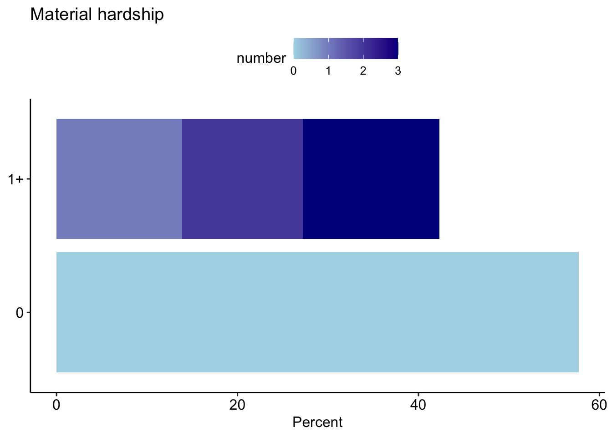
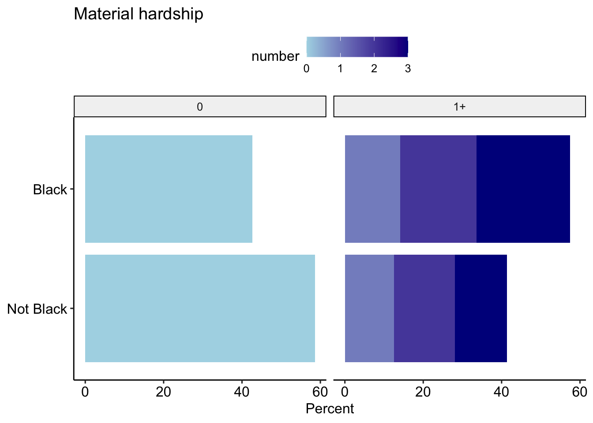
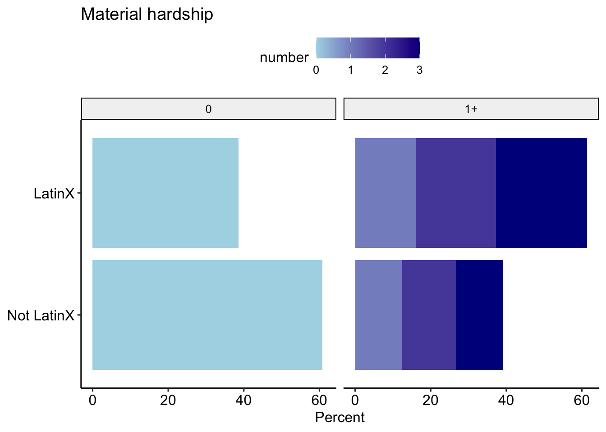
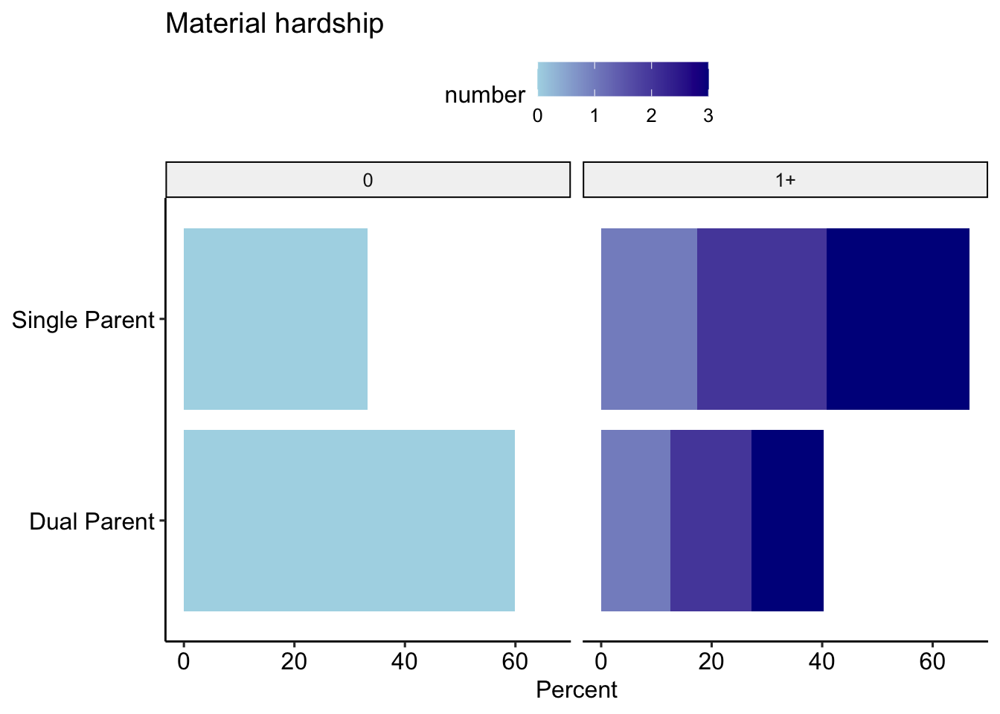
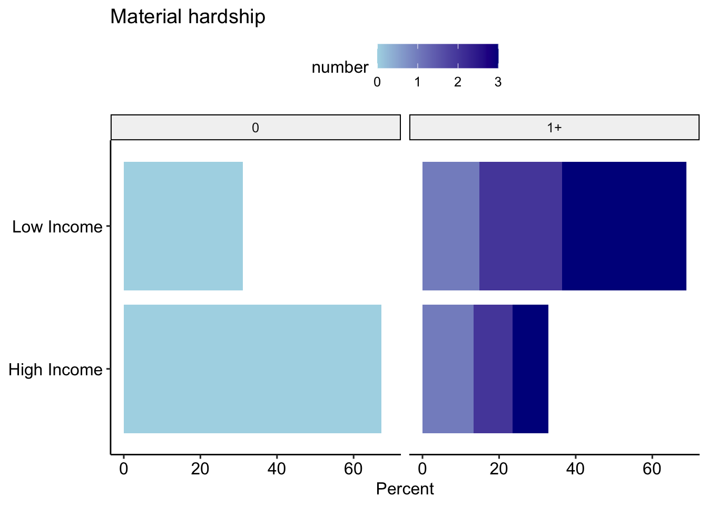
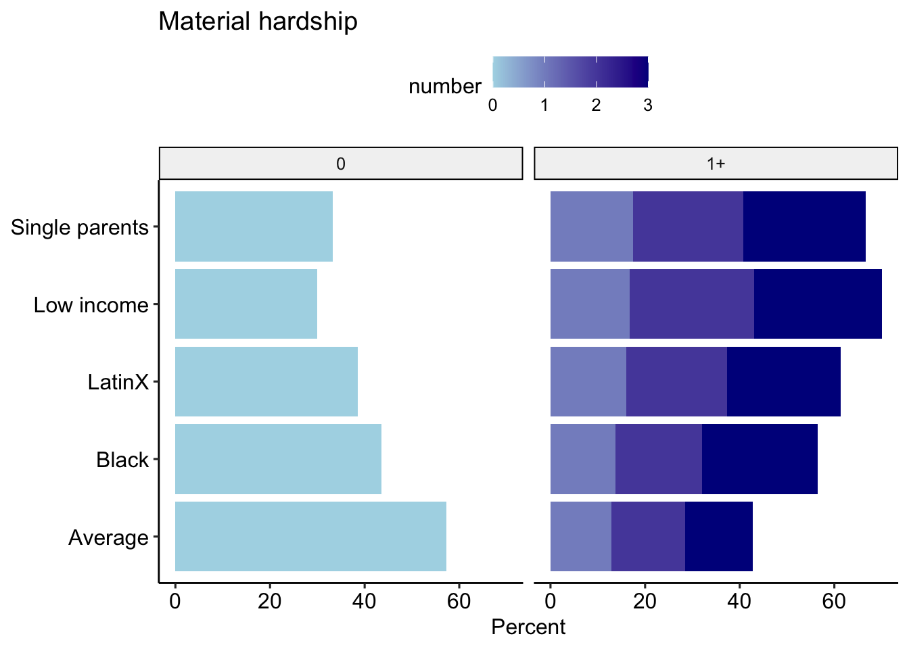

These analyses are based on responses collected from 8867 caregivers between the dates of April 06, 2020 and December 03, 2020. These caregivers represent a range of voices: 8.70% are Black/African American, 16.61% are LatinX, and 29.25% live at or below 1.5 times the federal poverty line. Proportions/percentages are calculated based on the item-level response rates, not out of the total sample size. The data for these analyses are not weighted.
Note that foreclosure and housing were combined into a single variable.





